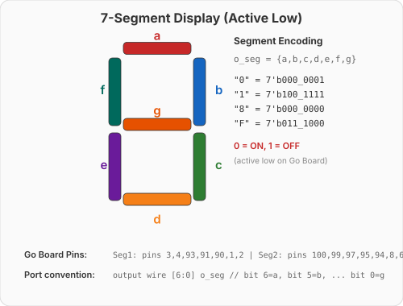

Video 4 of 4 · ~10 minutes
UCF · Department of ECE

0 = segment ON, 1 = segment OFF.
module hex_to_7seg (
input wire [3:0] i_hex,
output reg [6:0] o_seg // {a,b,c,d,e,f,g}
);
always @(*) begin
case (i_hex) // abcdefg
4'h0: o_seg = 7'b0000001; // 0
4'h1: o_seg = 7'b1001111; // 1
4'h2: o_seg = 7'b0010010; // 2
4'h3: o_seg = 7'b0000110; // 3
4'h4: o_seg = 7'b1001100; // 4-7
4'h5: o_seg = 7'b0100100;
4'h6: o_seg = 7'b0100000;
4'h7: o_seg = 7'b0001111;
4'h8: o_seg = 7'b0000000; // 8-F
4'h9: o_seg = 7'b0000100;
4'hA: o_seg = 7'b0001000;
4'hB: o_seg = 7'b1100000;
4'hC: o_seg = 7'b0110001;
4'hD: o_seg = 7'b1000010;
4'hE: o_seg = 7'b0110000;
4'hF: o_seg = 7'b0111000;
default: o_seg = 7'b1111111; // all off
endcase
end
endmoduleFrom empty file → working decoder on the Go Board
case statement + segment mapping → test all 16 digits
// In your top module, INSTANTIATE the decoder:
hex_to_7seg display1 (
.i_hex (w_some_value), // named port connection
.o_seg (w_segments)
);① 7-segment displays map 4-bit hex to 7 segment enables.
② Go Board segments are active low (0 = ON).
③ The case statement (tomorrow) is the natural way to express this.
④ Modules instantiate other modules — hierarchy is key.
Pause and try each question before revealing the answer.
Q1: Does reg always synthesize to a register?
reg in always @(*) = combinational. Only reg in always @(posedge clk) becomes a flip-flop.Q2: What is 4'hF in binary?
1111 (decimal 15). The 4' specifies 4 bits, h = hex.Q3: What does assign y = sel ? a : b; synthesize to?
sel=1 → a, sel=0 → b.Q4: What’s the difference between & and &&?
& is bitwise (per-bit, same width result). && is logical (1-bit true/false). 4'b1010 & 4'b0101 = 4'b0000 but 4'b1010 && 4'b0101 = 1'b1.Pre-Class Videos Complete
Day 2 · Hands-On Lab
Make sure your toolchain is working and your Go Board is connected.